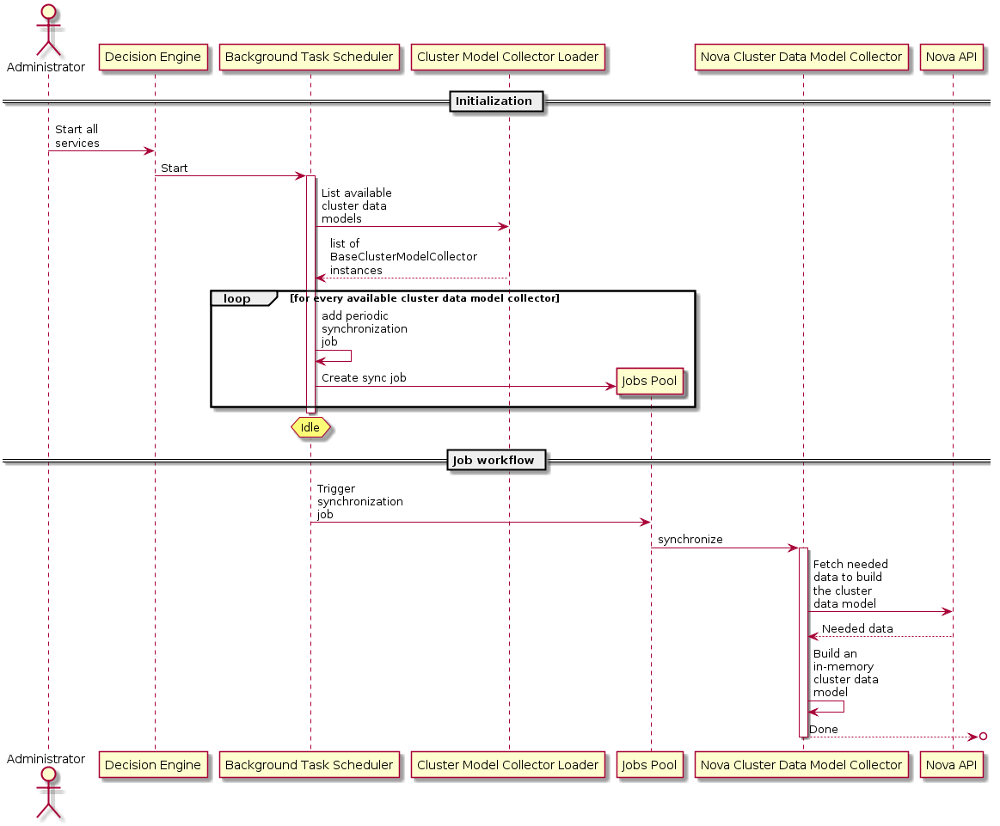
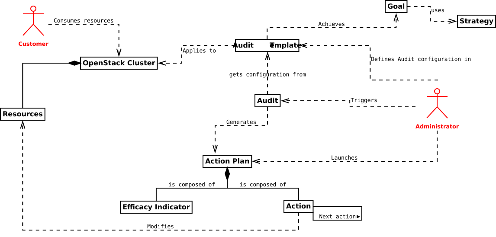
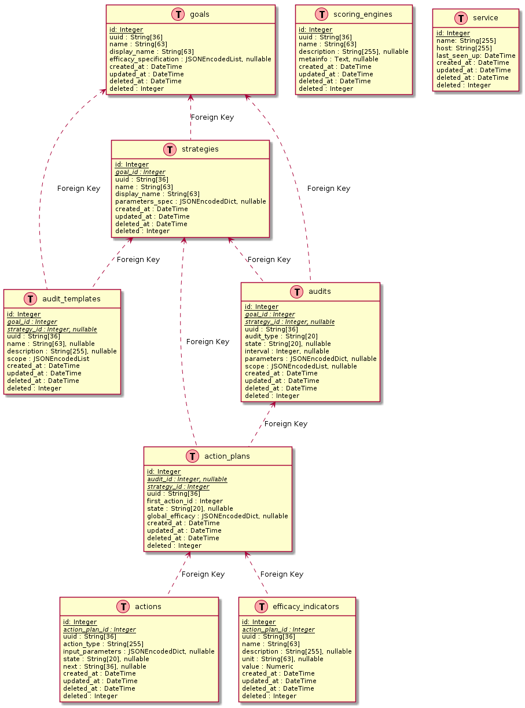
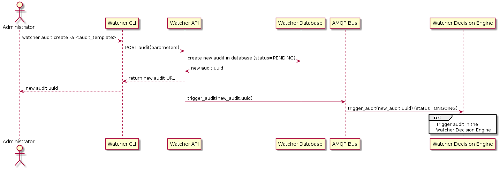
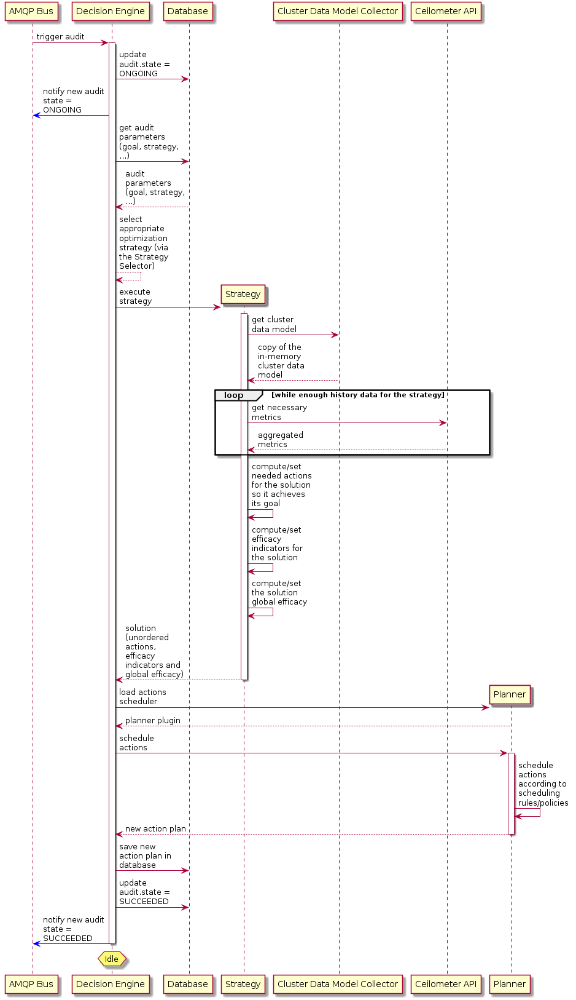
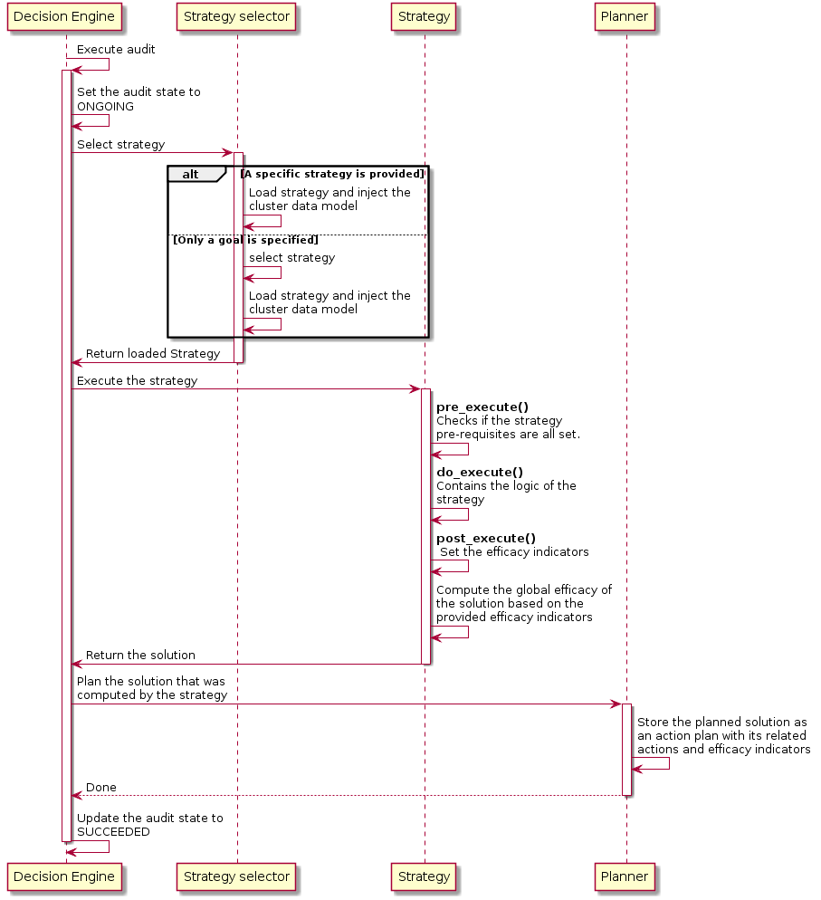
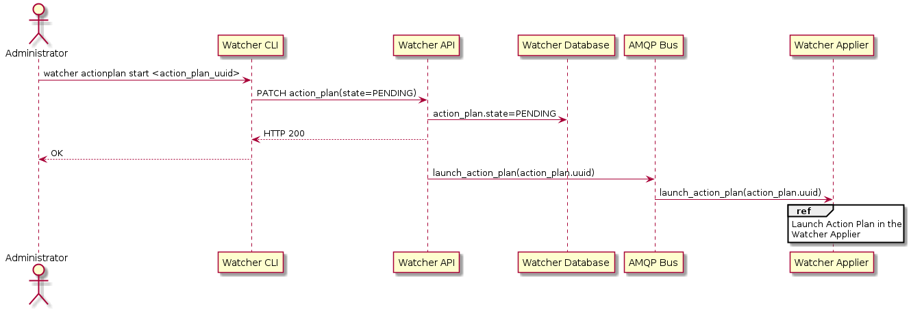
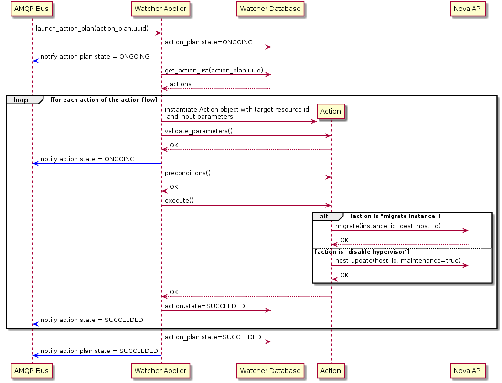
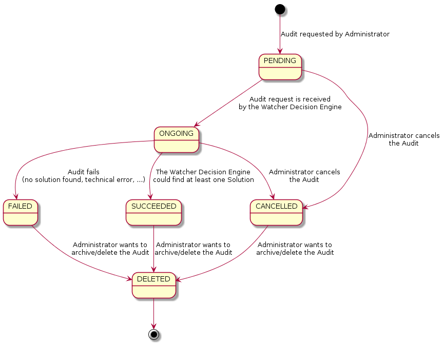
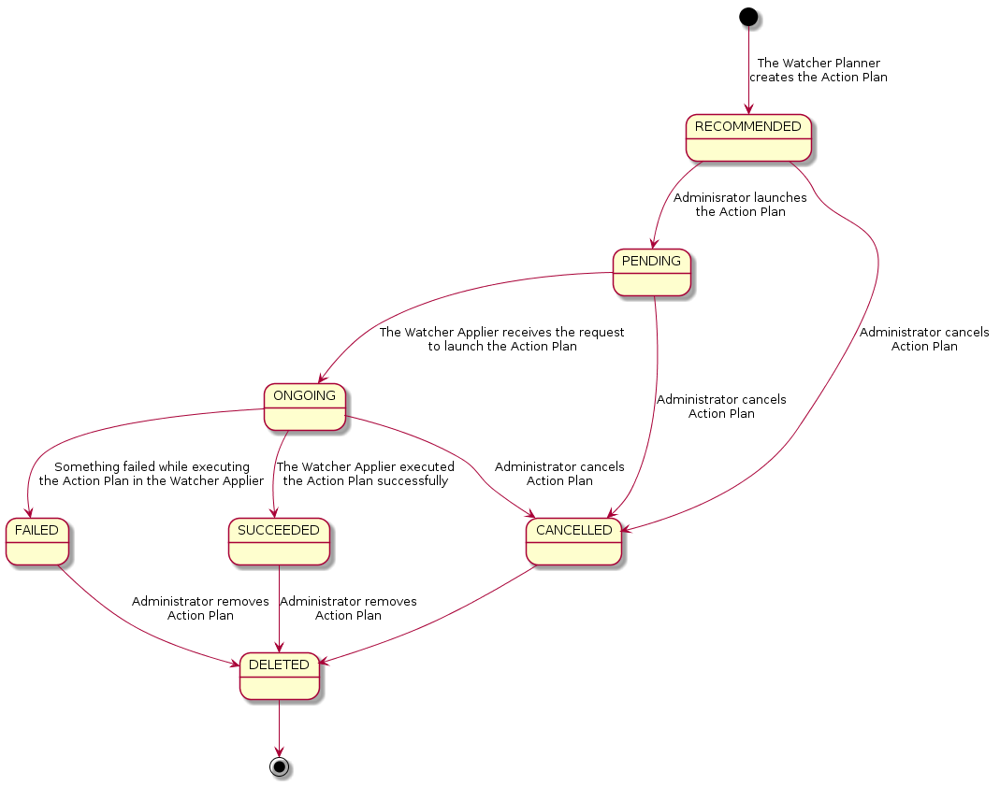

System Architecture¶
This page presents the current technical Architecture of the Watcher system.

Components¶
AMQP Bus¶
The AMQP message bus handles internal asynchronous communications between the different Watcher components.
Datasource¶
This component stores the metrics related to the cluster.
It can potentially rely on any appropriate storage system (InfluxDB, OpenTSDB, MongoDB,...) but will probably be more performant when using Time Series Databases which are optimized for handling time series data, which are arrays of numbers indexed by time (a datetime or a datetime range).
Watcher API¶
This component implements the REST API provided by the Watcher system to the external world.
It enables the Administrator of a Cluster to control and monitor the Watcher system via any interaction mechanism connected to this API:
- CLI
- Horizon plugin
- Python SDK
You can also read the detailed description of Watcher API.
Watcher Applier¶
This component is in charge of executing the Action Plan built by the Watcher Decision Engine.
It connects to the message bus and launches the Action Plan whenever a triggering message is received on a dedicated AMQP queue.
The triggering message contains the Action Plan UUID.
It then gets the detailed information about the Action Plan from the Watcher Database which contains the list of Actions to launch.
It then loops on each Action, gets the associated class and calls the execute() method of this class. Most of the time, this method will first request a token to the Keystone API and if it is allowed, sends a request to the REST API of the OpenStack service which handles this kind of atomic Action.
Note that as soon as Watcher Applier starts handling a given Action from the list, a notification message is sent on the message bus indicating that the state of the action has changed to ONGOING.
If the Action is successful, the Watcher Applier sends a notification message on the bus informing the other components of this.
If the Action fails, the Watcher Applier tries to rollback to the previous state of the Managed resource (i.e. before the command was sent to the underlying OpenStack service).
Watcher CLI¶
The watcher command-line interface (CLI) can be used to interact with the Watcher system in order to control it or to know its current status.
Please, read the detailed documentation about Watcher CLI.
Watcher Dashboard¶
The Watcher Dashboard can be used to interact with the Watcher system through Horizon in order to control it or to know its current status.
Please, read the detailed documentation about Watcher Dashboard.
Watcher Database¶
This database stores all the Watcher domain objects which can be requested by the Watcher API or the Watcher CLI:
- Goals
- Strategies
- Audit templates
- Audits
- Action plans
- Efficacy indicators via the Action Plan API.
- Actions
The Watcher domain being here “optimization of some resources provided by an OpenStack system”.
Watcher Decision Engine¶
This component is responsible for computing a set of potential optimization Actions in order to fulfill the Goal of an Audit.
It first reads the parameters of the Audit to know the Goal to achieve.
Unless specified, it then selects the most appropriate strategy from the list of available strategies achieving this goal.
The Strategy is then dynamically loaded (via stevedore). The Watcher Decision Engine executes the strategy.
In order to compute the potential Solution for the Audit, the Strategy relies on different sets of data:
- Cluster data models that are periodically synchronized through pluggable cluster data model collectors. These models contain the current state of various Managed resources (e.g., the data stored in the Nova database). These models gives a strategy the ability to reason on the current state of a given cluster.
- The data stored in the Cluster Datasource which provides information about the past of the Cluster.
Here below is a sequence diagram showing how the Decision Engine builds and maintains the cluster data models that are used by the strategies.
{kind=link}
The execution of a strategy then yields a solution composed of a set of Actions as well as a set of efficacy indicators.
These Actions are scheduled in time by the Watcher Planner (i.e., it generates an Action Plan).
Data model¶
The following diagram shows the data model of Watcher, especially the functional dependency of objects from the actors (Admin, Customer) point of view (Goals, Audits, Action Plans, ...):
{kind=link}
Here below is a diagram representing the main objects in Watcher from a database perspective:
Sequence diagrams¶
The following paragraph shows the messages exchanged between the different components of Watcher for the most often used scenarios.
Create a new Audit Template¶
The Administrator first creates an Audit template providing at least the following parameters:
- A name
- A goal to achieve
- An optional strategy
{kind=link}
The Watcher API makes sure that both the specified goal (mandatory) and its associated strategy (optional) are registered inside the Watcher Database before storing a new audit template in the Watcher Database.
Create and launch a new Audit¶
The Administrator can then launch a new Audit by providing at least the unique UUID of the previously created Audit template:
{kind=link}
The Administrator also can specify type of Audit and interval (in case of CONTINUOUS type). There is two types of Audit: ONESHOT and CONTINUOUS. Oneshot Audit is launched once and if it succeeded executed new action plan list will be provided. Continuous Audit creates action plans with specified interval (in seconds); if action plan has been created, all previous action plans get CANCELLED state.
A message is sent on the AMQP bus which triggers the Audit in the Watcher Decision Engine:
{kind=link}
The Watcher Decision Engine reads the Audit parameters from the Watcher Database. It instantiates the appropriate strategy (using entry points) given both the goal and the strategy associated to the parent audit template of the audit. If no strategy is associated to the audit template, the strategy is dynamically selected by the Decision Engine.
The Watcher Decision Engine also builds the Cluster Data Model. This data model is needed by the Strategy to know the current state and topology of the audited OpenStack cluster.
The Watcher Decision Engine calls the execute() method of the instantiated Strategy and provides the data model as an input parameter. This method computes a Solution to achieve the goal and returns it to the Decision Engine. At this point, actions are not scheduled yet.
The Watcher Decision Engine dynamically loads the Watcher Planner implementation which is configured in Watcher (via entry points) and calls the schedule() method of this class with the solution as an input parameter. This method finds an appropriate scheduling of Actions taking into account some scheduling rules (such as priorities between actions). It generates a new Action Plan with status RECOMMENDED and saves it into the Watcher Database. The saved action plan is now a scheduled flow of actions to which a global efficacy is associated alongside a number of Efficacy Indicators as specified by the related goal.
If every step executed successfully, the Watcher Decision Engine updates the current status of the Audit to SUCCEEDED in the Watcher Database and sends a notification on the bus to inform other components that the Audit was successful.
This internal workflow the Decision Engine follows to conduct an audit can be seen in the sequence diagram here below:
{kind=link}
Launch Action Plan¶
The Administrator can then launch the recommended Action Plan:
{kind=link}
A message is sent on the AMQP bus which triggers the Action Plan in the Watcher Applier:
{kind=link}
The Watcher Applier will get the description of the flow of Actions from the Watcher Database and for each Action it will instantiate a corresponding Action handler python class.
The Watcher Applier will then call the following methods of the Action handler:
- validate_parameters(): this method will make sure that all the
provided input parameters are valid:
- If all parameters are valid, the Watcher Applier moves on to the next step.
- If it is not, an error is raised and the action is not executed. A notification is sent on the bus informing other components of the failure.
- preconditions(): this method will make sure that all conditions are met before executing the action (for example, it makes sure that an instance still exists before trying to migrate it).
- execute(): this method is what triggers real commands on other OpenStack services (such as Nova, ...) in order to change target resource state. If the action is successfully executed, a notification message is sent on the bus indicating that the new state of the action is SUCCEEDED.
If every action of the action flow has been executed successfully, a notification is sent on the bus to indicate that the whole Action Plan has SUCCEEDED.
State Machine diagrams¶
Audit State Machine¶
An Audit has a life-cycle and its current state may be one of the following:
- PENDING : a request for an Audit has been submitted (either manually by the Administrator or automatically via some event handling mechanism) and is in the queue for being processed by the Watcher Decision Engine
- ONGOING : the Audit is currently being processed by the Watcher Decision Engine
- SUCCEEDED : the Audit has been executed successfully and at least one solution was found
- FAILED : an error occurred while executing the Audit
- DELETED : the Audit is still stored in the Watcher database but is not returned any more through the Watcher APIs.
- CANCELLED : the Audit was in PENDING or ONGOING state and was cancelled by the Administrator
The following diagram shows the different possible states of an Audit and what event makes the state change to a new value:
{kind=link}
Action Plan State Machine¶
An Action Plan has a life-cycle and its current state may be one of the following:
- RECOMMENDED : the Action Plan is waiting for a validation from the Administrator
- PENDING : a request for an Action Plan has been submitted (due to an Administrator executing an Audit) and is in the queue for being processed by the Watcher Applier
- ONGOING : the Action Plan is currently being processed by the Watcher Applier
- SUCCEEDED : the Action Plan has been executed successfully (i.e. all Actions that it contains have been executed successfully)
- FAILED : an error occurred while executing the Action Plan
- DELETED : the Action Plan is still stored in the Watcher database but is not returned any more through the Watcher APIs.
- CANCELLED : the Action Plan was in RECOMMENDED, PENDING or ONGOING state and was cancelled by the Administrator
- SUPERSEDED : the Action Plan was in RECOMMENDED state and was automatically superseded by Watcher, due to an expiration delay or an update of the Cluster data model
The following diagram shows the different possible states of an Action Plan and what event makes the state change to a new value:
{kind=link}